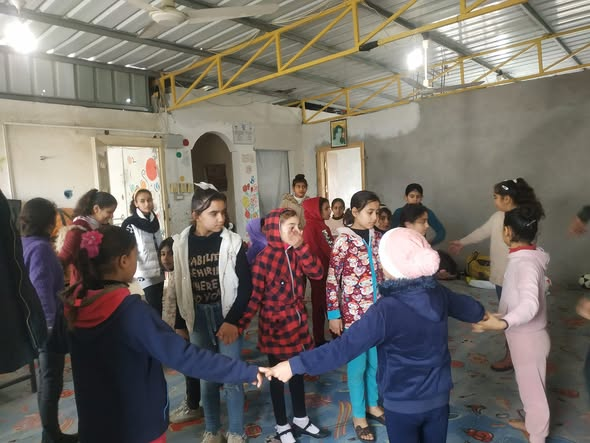
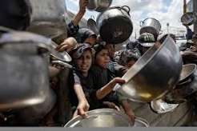
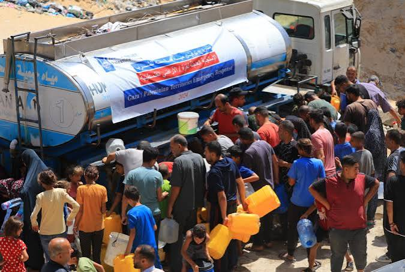
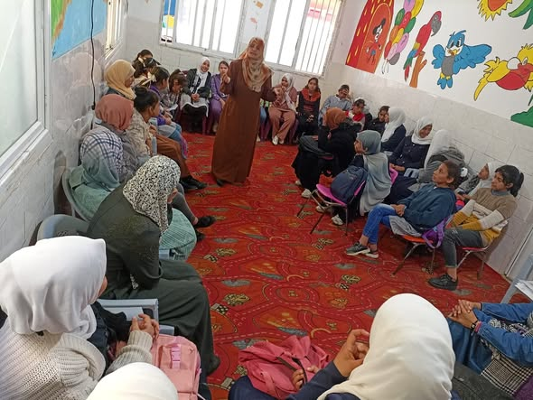

نعمل من قلب غزة لخدمة أهلنا، ونحافظ على تراثنا الشعبي، ونزرع الأمل في كل بيت رغم الحرب والظروف الصعبة.

جمعية التغريد الخيرية جمعية أهلية فلسطينية تعمل في قطاع غزة، تأسست لخدمة المجتمع المحلي والحفاظ على تراثه الشعبي. في زمن السلم عملت الجمعية على تعليم أبناء الحي فنون الدبكة الشعبية والتراث الفلسطيني، وضمّت روضة لتنمية الأطفال. ومنذ بداية العدوان على قطاع غزة، حوّلت الجمعية جهدها بالكامل لخدمة النازحين والمتضررين، من خلال مشاريع إغاثية استفاد منها آلاف الأهالي في مواصي خان يونس وما حولها.
فريق من المتطوعين والمتطوعات يعمل بإخلاص لخدمة أهلنا في غزة.

يقود فريق الجمعية بخبرة طويلة في العمل الإغاثي والمجتمعي.
يتابع تنفيذ المشاريع الإغاثية والتنموية على الأرض.
تنسّق فرق المتطوعين وتنظّم حملات التوزيع الميدانية.
يدير الجانب المالي ويشرف على شفافية التبرعات والصرف.
تُعنى بأنشطة الدبكة والتراث الشعبي وبرامج الأطفال.
من قلب الحرب على غزة إلى تراثنا الشعبي، هذه محطات من عمل الجمعية.

أقامت الجمعية تكية طعام لخدمة النازحين في مواصي خان يونس، استفاد منها الأهالي خلال العدوان على قطاع غزة منذ بدايته.

وزّعت الجمعية طرودًا غذائية على الأهالي والنازحين للتخفيف من آثار الحرب على قطاع غزة.
+5000 مستفيد
وزّعت الجمعية كمّيات من المياه الصالحة للشرب على الأهالي والنازحين في ظل انقطاع مصادر المياه.
+10000 لتر
علّمت الجمعية أبناء الحي فنون الدبكة الشعبية والتراث الفلسطيني، حفاظًا على الهوية الوطنية.

ضمّت الجمعية روضة لرعاية الأطفال وتنمية مهاراتهم في بيئة تربوية آمنة.
تعلن جمعية التغريد عن طرح طلبات عروض أسعار للمشاريع الإغاثية والتنموية. ندعو الشركات والتجار المؤهلين لتقديم أسعارهم وفق الشروط المحددة.
يرغب قسم المشتريات بالجمعية في استدراج عروض أسعار من التجار المعتمدين والمحلات التجارية لتعبئة وتوريد طرود غذائية طارئة بموجب كابونات مستحقة لـ 1000 عائلة نازحة في مواصي خان يونس وما حولها.
تعلن الجمعية عن رغبتها في التعاقد مع أصحاب آبار وموزعي مياه لتوريد وتوزيع صهاريج مياه عذبة صالحة للشرب بشكل يومي لتجمعات خيام النازحين والمناطق المتضررة في قطاع غزة.
عطاء خاص بتوريد 300 خيمة إيواء مقاومة للأمطار وحرارة الشمس مع شوادر العزل لفائدة العائلات المتضررة حديثاً جراء حركة النزوح المستمرة.
استدراج عروض أسعار لتوفير لحوم عجل وبلدي بالإضافة إلى سلال الخضار اليومية لتجهيز وإعداد الوجبات الساخنة داخل تكية جمعية التغريد.
يسعدنا تواصلك معنا للاستفسار أو المساهمة في دعم مشاريعنا.
+970 000 000 000
info@example.com
قطاع غزة - فلسطين